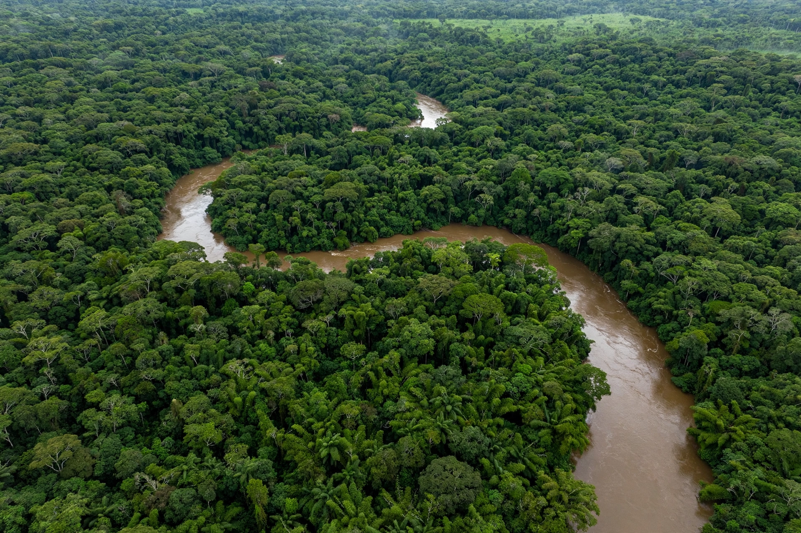

| Country | Brazil |
|---|---|
| Region | North |
| Capital and largest city | Rio Branco |
| Area | 164,123 km² |
| Population | ~830,000 (2022 census) |
| Borders | Amazonas, Rondônia; Bolivia and Peru |
| Acquired by Brazil | Treaty of Petrópolis, 1903 |
| Statehood | 1962 |
| Time zone | UTC−5 (Acre Time) |
Acre (Portuguese pronunciation: [ˈakɾi]) is a state in the far west of Brazil, in the North Region, bordering the Brazilian states of Amazonas and Rondônia and the countries of Bolivia and Peru. Almost entirely covered by Amazon rainforest and drained by tributaries of the Purus and Juruá rivers, it is Brazil's westernmost state; its capital is Rio Branco, on the Acre River. The state's name derives from the Aquiri ("river of the alligators" in a local Indigenous language), rendered by early explorers as Acre.
Acre was, on paper, Bolivian territory under the 1867 Treaty of Ayacucho, but from the 1870s its forests filled with Brazilian rubber tappers (seringueiros), mostly drought refugees from Ceará, drawn by the Amazon rubber boom. Bolivia's attempts to tax and administer the region provoked a series of uprisings — the Acrean Revolution — including the short-lived Republic of Acre (1899–1900) of Luis Gálvez and the armed campaign of 1902–1903 led by the gaúcho officer José Plácido de Castro, who captured the Bolivian garrison at Xapuri and Puerto Alonso. Brazil, under foreign minister Baron Rio Branco, settled the matter by purchase: by the Treaty of Petrópolis (17 November 1903) Bolivia ceded Acre for two million pounds sterling, a small territorial swap, and a Brazilian promise to build the Madeira–Mamoré Railway around the rapids of the Madeira River. Acre became a federal territory in 1904 and a state in 1962.
When plantation rubber from Asia collapsed the Amazon boom after 1912, Acre's tappers subsisted on rubber, Brazil nuts, and small farming for decades. In the 1970s, federally encouraged cattle ranchers from the south bought up the rubber estates and began clearing forest, driving violent land conflict. The tappers' unions, organized in empates (nonviolent standoffs against clearing crews), produced Brazil's most famous environmental martyr: Chico Mendes, president of the Xapuri rural workers' union, assassinated by a rancher on 22 December 1988. His proposed union of forest peoples and conservation was realized after his death in the system of extractive reserves (reservas extrativistas) — beginning with the Chico Mendes Extractive Reserve (1990) — which grant traditional communities collective use rights over standing forest, a model now applied across the Amazon.
Acre's terrain is a low sedimentary plateau dissected by meandering rivers — the Acre, Purus, Tarauacá, and Juruá — subject to major floods, as in the record Rio Branco flood of 2015. Its western forests around the Serra do Divisor are among the most biodiverse on Earth and retain significant populations of Indigenous peoples, including groups in voluntary isolation. The state keeps its own time zone, Acre Time (UTC−5): a 2008 law aligning Acre with Amazon Time was reversed by referendum in 2010 and federal legislation in 2013, restoring the two-hour difference from Brasília. Paved interconnection came late — the BR-364 to Rondônia and, across the Brazil–Peru Interoceanic Highway, a road to the Pacific via the Inambari bridge — making Rio Branco a hinge between the Amazon and the Andes. Notable Acreans include the environmentalist and three-time presidential candidate Marina Silva, born on a rubber estate near Rio Branco.